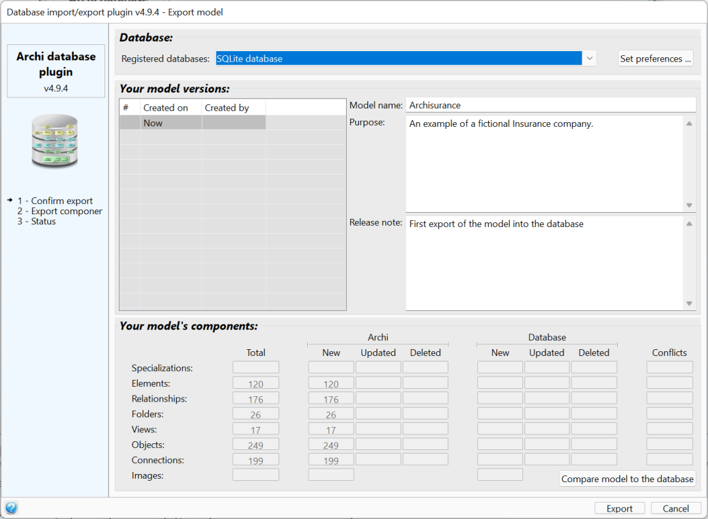

Export a model to a database
This page describes how to export a model in a database.
To export a model to a database, you first need to select the model to export, then either access the File / Export / Export model to database menu option of Archi, or right-click on the model's name and select the Export model to database context menu option.
The graphical interface
As every window of the database plugin, the export window is split in 5 zones:
- The left zone shows the plugin's logo and the list of steps to finish the action.
- The right hand-side of the export window is split in 3 zones:
- The database selection
- The model versions
- The model's components

The database selection
This section allows to select the database where the model should be exported. The databases are presented in the order defined on the preferences page and the first one is pre-selected as the default database.
The Set preferences button allows to directly open the preference page to update the database list or set preferences.
Please note that it is possible to export any model in any database, even if the model has been imported from another database or loaded from an Archimate file.
The model versions
This section lists the versions of the model that already exist in the selected database. As every database is independent of the others, it may contain different versions of your model. Thus changing the database in the database selection drop list will of course impact the model versions.
The "Now" line represents the version that will be exported in the database. It allows to change the model name and purpose, but also to set a release note to help remembering the changes that have been done in this model version.
The model's components
This section shows statistics about the model, as it is in Archi and how it compares to the selected database.
The Total column indicates how many components are present in your current model in Archi.
If the plugin preferences states that the it should automatically compare the model to the database, then the other columns are filled in, otherwise they are empty. The Compare model to the database allows to (re)launch the comparison process and to fill-in the comparison columns. This comparison is read-only, it keeps your database untouched.
To achieve this comparison, the plugin uses Archi's internal IDs to check if those components already exists in the database. A checksum is automatically calculated by the plugin and allows to determine if the current component in Archi is identical or different from the database.
The Archi columns summarize how the current Archi model compares to the database:
- New: Counts the components that are new in the model from the last model version in the database.
- Updated: Counts the components that have been updated since the last model version in the database
- Deleted: Counts the components that have been deleted from the model since the last model version in the database
The Database columns summarize are used in the situation where you and other people imported the same model in Archi and export their own model updates to the database while the other are still working on their own copy of the model. In this scenario, the columns summarize how the latest version of the model in the database compares to your current version in Archi:
- New: Counts the new components that have been created in the model by the other person.
- Updated: Counts the new components that have been updated in the model by the other person. This situation occurs if the other person has updated the components but you haven't thus this doesn't lead to any conflict.
- Deleted: Counts the new components that have been deleted in the model by the other person.
A specific procedure is in place to detect and solve conflicts:
- Conflicts: Counts the new components that have been updated by the other person, but that have been updated by you in your current model. Thus, the updates done by you and the other person are conflicting.
At this stage, it is not possible to have more details about which components are new, updated, deleted or conflicting.
The export process
When the user clicks on the "export" button, the plugin:
- Recalculates the status of all the components as it may have changed since the last comparison,
- Imports missing components from the database and update those that have been updated in the database,
- Exports components that have been updated in Archi,
- References all the model components as been pat of the model (even those that do not need to be exported),
- If conflicts are detected, the user is invited to resolve them.
As the export process may take some time, the databases list is replaced by a progress bar to show the export progress.
At the end of the export process, the progress bar is replaced by a status message with a color that highlights the export status (green if successful, yellow in case of error). In case of any error, the export is rolled-back and the database is left untouched. This behavior allows to guarantee the database coherence.
The export to the database cannot be undone, but in case some components have been imported or updated during the export process, the whole import/update can be undone using Archi undo/redo mechanism (menu Undo/Redo or keys ctrl-Z/ctrl-Y).
Version management
If the component does not exist in the database:
- The component is assumed to be a new component created by Archi, either manually or loaded from an Archimate file --> The component will be created in the database.
If the component does exist in the database:
- The plugin calculates the current checksum and retrieves all the other needed checksums and versions from the database:
- The component's "initial version and checksum" that is the latest version in the database that has got the same checksum,
- The component's "latest version and checksum" that is the latest version in the database that is part of the same model,
- The component's "latest database version and checksum" that is the latest version in the database whatever the model the component is in.
- Then it is then possible to compare all the versions and checksums:
- If the "latest version" and the "latest database version" are equal, then the component has not been updated by another model (thus, only the "current checksum" and "initial checksum" are relevant):
- If the "current checksum" and "initial checksum" are identical then the component is in sync with the database --> it does not need to be exported to the database
- If the "current checksum" and "initial checksum" differ then the component has been updated in Archi --> it needs to be exported to the database
- If the "database version" is zero then the component does not exist anymore in the latest version of the model in the database --> it needs to be deleted in Archi
- If the "current checksum" is identical to the "latest database checksum" then the component is in sync with the database --> it does not need to be exported to the database
- If the "initial checksum" differs from the the "current checksum" then the component has been updated in Archi
- If the "initial checksum" differs from the the "database checksum" then the component has been updated in the database
- If the component has been updated in Archi but not in the database --> it needs to be exported to the database
- If the component has been updated in the database but not in Archi --> it needs to be updated in Archi with the values from the database
- If the component has been updated in both Archi and the database:
- If the "current checksum" and "database checksum" are identical, then the same modifications have been done in Archi and in the database --> it does not need to be exported to the database
- If they differ, then the modifications done in Archi and in the database are different --> there is a conflict that needs to be manually resolved by the user
Conflict resolution
Undo / redo
All the modifications done on your model during the export process, because of new, updated, deleted or conflicting components in the database, can be undone using the Ctrl-Z key or Archi's Edit / Undo menu, and redone using the Ctrl-Y key or Archi's Edit / Redo menu.
Exports to a database cannot be undone. Nevertheless, as all models and components are versioned in the database, it is always possible to open a previous version of a model or a component.